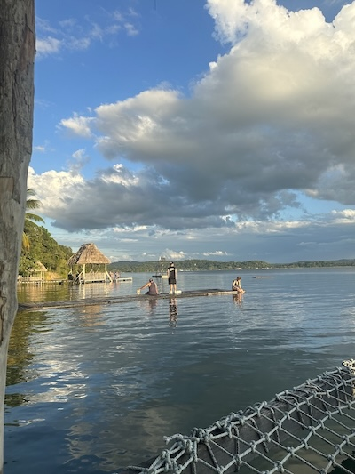

Norlin Vicente
About Me
Hello! My name is Norlin Vicente. I am from Guatemala and currently living in Guatemala City. I have experience working in construction, customer service, and accounts receivable. I am currently learning web development and data analytics to expand my professional skills. I enjoy building projects, learning technology, and creating new business opportunities.
Guatemala

Guatemala is a beautiful country located in Central America known for its volcanoes, mountains, culture, and historical sites. Guatemala City is the capital and largest city in the country. I am proud of my Guatemalan heritage and enjoy sharing my culture and experiences.